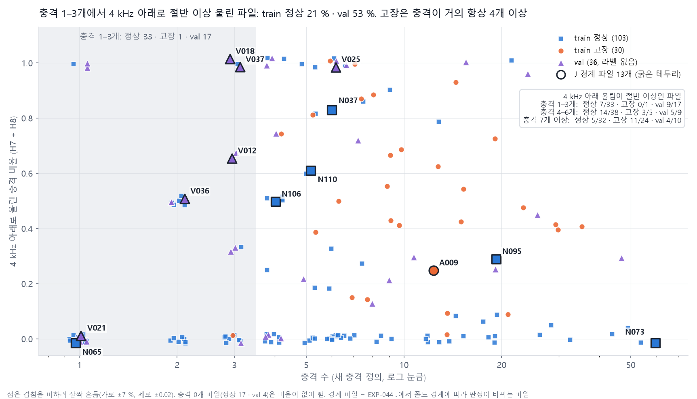
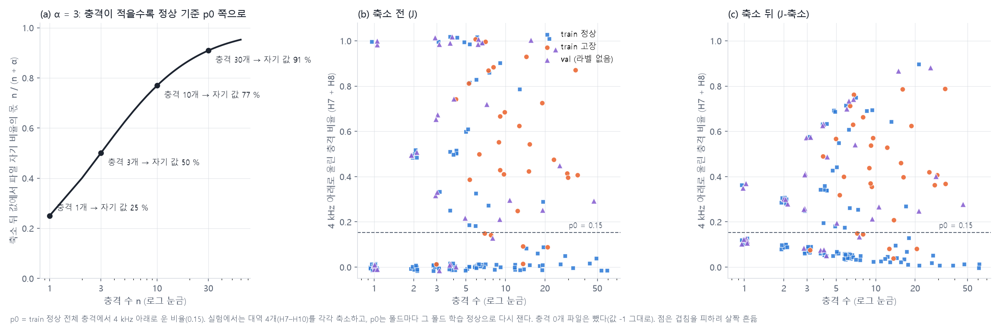
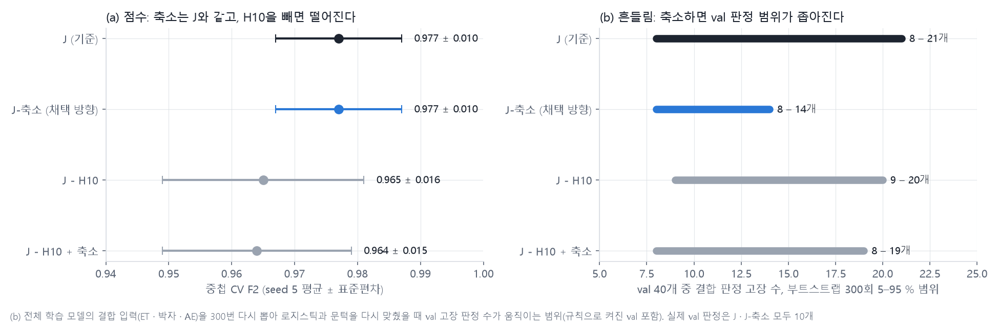
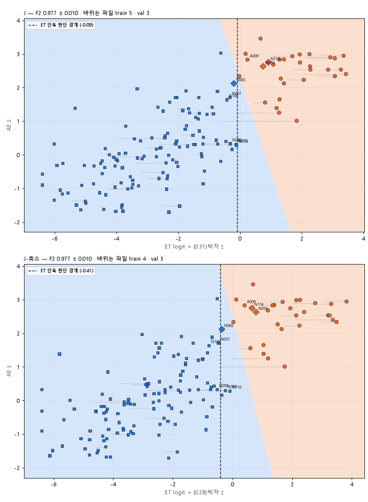

9조 텐션암 이상감지 · 2026-11-22 · 원본 3_단계/5_모델비교/5_울림비율축소/EXP-050_1122_울림비율축소_H10/ · 판정: 채택 방향(축소), 이후 실험 기준 구성 = J-축소
한 줄 요약. 충격이 1–3개뿐인 파일은 "몇 kHz로 울렸는가" 비율이 우연에 크게 흔들립니다. 그래서 그 비율을 정상 평균 쪽으로 당겨(축소) 넣었습니다. 점수는 J와 똑같고(F2 0.977 ± 0.010), 학습 데이터가 조금만 바뀌어도 val 판정이 덜 흔들립니다(val 고장 수 범위 8–21개 → 8–14개). 함께 시험한 "H10 빼기"는 점수가 떨어져서 쓰지 않습니다.
0.977 ± 0.010J-축소 중첩 CV F2 (J와 같음)
1.000 · 0.030재현율 · 오경보율 (J와 같음)
8–14개val 고장 수 흔들림 범위 (J 8–21개)
10 / 40val 고장 판정 (J와 같은 파일)
1. 배경: 지금 모델 J
J(EXP-044)는 세 점수를 로지스틱 회귀로 합치고, 규칙 두 개를 OR로 붙인 모델입니다.
ET 점수: 충격 피처 16개(충격 수, 충격 세기, 충격이 몇 kHz로 울렸는지 등)로 학습한 Extra Trees가 내는 고장 확률(logit)
박자 z: 충격이 일정한 박자로 반복되는 정도
AE z: 정상 스펙트럼만 학습한 오토인코더의 복원 오차. 정상과 다르게 생긴 정도를 봅니다
규칙: E2(하중에 비해 크게 덜컥거림), 8.3 kHz 공진. 둘 중 하나가 켜지면 무조건 고장으로 판정합니다
J는 학습 150개에서 고장 30개를 모두 잡습니다(중첩 CV F2 0.977). 그런데 경계에 붙은 파일이 13개 있습니다. 경계 파일은 교차검증의 폴드가 바뀌거나 학습 데이터가 조금 달라지면 정상과 고장 판정이 뒤바뀌는 파일입니다(train 7개, val 6개). 이 파일들이 왜 경계에 붙는지 하나씩 진단한 결과가 이 실험의 출발점입니다(6-4).
2. 문제: 충격은 몇 개뿐인데 낮게 울린 파일

가로 = 충격 수(로그), 세로 = 4 kHz 아래로 울린 충격의 비율(ET가 보는 H7 1–2k + H8 2–4k). 네모 = train 정상, 원 = train 고장, 세모 = val(라벨 없음), 굵은 테두리 = 경계 파일 13개.
경계 파일 13개 중 8개(N037 · N110 · N106 · V025 · V018 · V037 · V012 · V036)는 같은 유형입니다. 충격은 2–6개뿐인데, 그중 많은 수가 4 kHz 아래로 울렸습니다.
고장 파일에서는 충격이 낮게 우는 경우가 많습니다. 그래서 ET는 낮은 울림 비율을 고장 신호로 배웠습니다. 그런데 충격이 1–3개뿐이면 1개만 낮게 울려도 비율이 33–100 %로 튑니다. 몇 번 안 되는 관측으로 비율을 크게 믿게 되는 것입니다.
고장은 충격이 거의 항상 4개 이상입니다(30개 중 29개). 충격이 1–3개이면서 낮게 울린 파일은 train 정상에도 있습니다(21 %, 7/33). val에는 이런 파일이 더 많습니다(53 %, 9/17).
충격 사이 간격, 큰 타격 뒤 후속 충격 같은 시간 구조 피처도 따로 살펴봤습니다. 이 피처들은 충격 수와 거의 같은 정보였습니다(상관 0.74–0.96). 그래서 새 피처를 만드는 대신 "충격이 적을 때 울림 비율을 얼마나 믿을지"를 고치기로 했습니다.
3. 아이디어: 울림 비율 축소
야구 타율과 같은 문제입니다. 3타수 2안타(0.667)인 타자가 300타수 200안타인 타자만큼 잘 친다고 믿지는 않습니다. 관측이 적은 비율은 리그 평균 쪽으로 당겨서 봅니다. 통계에서는 이를 축소(shrinkage)라고 부릅니다. 여기서 "리그 평균"은 정상 파일들의 평균 울림 비율 p0입니다.
축소 뒤 비율 = (그 대역으로 운 충격 수 + α · p0) / (충격 수 + α)
α = 3: 정상 평균에서 "가상의 충격 3개"를 빌려 온다는 뜻입니다. 충격이 1개면 축소 뒤 값의 25 %만 파일 자기 값이고, 3개면 50 %, 10개면 77 %, 30개면 91 %가 자기 값입니다. α는 실험 전에 3으로 정했고, 다른 값은 돌려 보지 않았습니다(점수를 보고 고르면 과적합이 되기 때문).
p0: 학습 정상 파일의 모든 충격을 모아 잰 대역별 비율입니다. 1–2k 0.112 · 2–4k 0.040 · 4–8k 0.835 · 8–12.5k 0.013이고, 정상 충격은 대부분 4–8 kHz로 웁니다. 교차검증에서는 폴드마다 그 폴드의 학습 정상으로 다시 잽니다. 검증 파일 정보가 새지 않게 하려는 것입니다.
울림 비율 4개(H7–H10)를 모두 이 방식으로 바꿔서 ET에 넣습니다. 다른 피처, 박자, AE, 규칙은 J 그대로입니다. 충격이 0개인 파일은 비율이 없으므로 기존 값(-1)을 그대로 둡니다.
예: 충격 1개가 2–4 kHz로 울린 파일은 2–4k 비율이 1.00 → 0.28로 바뀝니다. 충격 20개 중 10개가 그랬던 파일은 0.50 → 0.44로 거의 그대로입니다(축소_예시.py).

(a) 충격 수에 따라 자기 값이 차지하는 몫. (b) 축소 전, (c) 축소 뒤 4 kHz 아래 울림 비율. 충격이 적은 왼쪽 점들이 p0(점선) 쪽으로 모이고, 충격이 많은 오른쪽은 거의 그대로입니다.
4. 실험 설계
2×2 비교: 축소 여부(있음/없음) × H10 빼기 여부(있음/없음)로 네 구성을 만들었습니다. H10(8–12.5 kHz 울림 비율)을 빼 보자는 안은 다른 분석에서 나왔습니다. H10은 AE와 정보가 겹치고, 정상 파일의 고주파 지속음에 값이 좌우되기 때문입니다.
평가: 지금까지와 같은 중첩 CV입니다(바깥 5폴드 × 안쪽 4폴드, seed 5번, ET 나무 300그루). 네 구성 모두 같은 분할을 쓰므로 파일별로 바로 비교할 수 있습니다.
잣대 (미리 정함): ① 중첩 CV F2(주 잣대) ② 흔들림: 학습 데이터가 바뀔 때 판정이 얼마나 바뀌는지 ③ 경계 파일 13개와 충격 4–6개 고장의 이동 ④ val 판정 수(보조).
5. 결과

(a) 네 구성의 중첩 CV F2. (b) 결합기(로지스틱)를 부트스트랩으로 300번 다시 맞췄을 때 val 40개 중 고장 판정 수가 움직이는 범위(5–95 %). 규칙으로 켜진 val도 포함해서 셌습니다.
구성
F2
재현율
오경보율
놓친 고장 (5번 중)
판정이 바뀌는 파일 train · val
val 고장 판정
J (기준)
0.977 ± 0.010
1.000
0.030
—
5 · 3
10
J-축소
0.977 ± 0.010
1.000
0.030
—
4 · 3
10
J - H10
0.965 ± 0.016
0.987
0.032
A009 1 · A028 1
3 · 3
11 (+025)
J - H10 + 축소
0.964 ± 0.015
0.980
0.025
A009 1 · A028 2
7 · 4
11 (+025)
"판정이 바뀌는 파일" = 바깥 폴드 모델 5개와 전체 학습 모델 1개를 같은 파일에 적용했을 때 정상과 고장 판정이 갈리는 파일 수입니다(규칙이 켜진 파일은 제외).
읽는 법
축소는 점수를 바꾸지 않습니다. F2, 재현율, 오경보율이 J와 소수 셋째 자리까지 같습니다. 오경보 총 횟수(18회)도 같고, 어느 정상 파일에서 오경보가 나는지만 바뀝니다(아래 표).
걱정했던 부작용은 없었습니다. 충격이 4–6개인 고장(A003 · 016 · 017 · 023 · 030)은 낮은 울림이 실제 고장 신호입니다. 축소가 이 신호까지 약하게 할 수 있었지만, 다섯 개 모두 네 구성에서 5/5로 잡혔습니다.
축소하면 덜 흔들립니다. 학습 데이터를 다시 뽑을 때 val 고장 수가 J는 8–21개 사이에서 움직이지만, J-축소는 8–14개 사이입니다. 경계 근처 val 파일들이 정상 쪽으로 물러나 판정이 안정됩니다.
H10을 빼면 손해입니다. 고장 A028 · A009를 가끔 놓쳐 F2가 0.012 떨어집니다. 8–12.5 kHz 울림에도 고장 정보가 남아 있으므로 H10은 그대로 둡니다.
오경보 파일 이동 (seed 5번 중 고장으로 판정한 횟수)
정상 파일
025
037
059
065
073
095
106
110
116
합
J
2
2
3
4
0
1
1
0
5
18
J-축소
3
2
3
3
1
0
0
1
5
18
059 · 065 · 116은 고주파 지속음이 있는 이상치 정상이라 어떤 구성으로도 정상 판정으로 내려오지 않습니다(정보 한계).
결합 평면에서 본 차이

위 = J, 아래 = J-축소. 가로 = ET logit + 박자 몫, 세로 = AE z. 배경 = 결합 판단(파랑 정상, 주황 고장), 세로 점선 = ET 하나만 쓸 때의 경계. 점 색 = 최종 판정(규칙 포함), 모양 = 실제 라벨(네모 정상, 원 고장, ◆ 이상치 정상 059 · 065 · 116). 규칙만으로 잡힌 고장은 그림에서 뺐습니다. 축소하면 경계 정상 파일들(N037 · N106 · N095 · N110)이 ET 점선의 왼쪽으로 조금 물러나고, 결합 경계는 거의 그대로입니다.
val 경계 파일의 여유 (결합 점수 − 문턱, 음수 = 정상 판정)
val 파일
J
J-축소
변화
018
-0.25
-0.72
정상 쪽으로
021
-0.80
-1.75
정상 쪽으로
036
-1.33
-1.77
정상 쪽으로
037
-1.71
-1.89
정상 쪽으로
025
-0.15
-0.09
조금 고장 쪽
012
-1.29
-1.15
조금 고장 쪽
027
+0.63
+0.50
고장 유지
판정이 바뀐 val 파일은 없습니다(J와 J-축소 모두 같은 10개를 고장으로 판정). 따라서 val 제출 결과는 J와 같습니다.
6. 결론과 다음
판정: 축소를 채택하는 방향으로 갑니다(11-22). 앞으로 실험의 기준 구성은 J-축소입니다. 점수는 그대로이고 판정이 덜 흔들리며, 근거가 물리적으로 설명됩니다(충격이 적으면 울림 비율이 우연에 좌우됨).
H10 빼기는 쓰지 않습니다.
다음 후보: ET 나무를 300그루로 늘린 것만으로도 흔들림이 줄었습니다(quick 7·6 → full 5·3). 그래서 ET를 더 부드럽게 만드는 설정(min_samples_leaf 등)으로 결합기 흔들림을 더 줄일 수 있는지 볼 예정입니다.
주의할 점
① 점수 차이는 표준편차(0.010) 안입니다. "더 좋은 모델"이 아니라 "같은 점수에 더 안정적인 모델"입니다.
② 축소 아이디어는 val 분포를 보고 나왔습니다(충격 1–3개 val 중 절반 이상이 낮게 울림. 라벨은 쓰지 않음). 그래서 판단의 주 잣대는 train 중첩 CV이고 val은 보조로만 봤습니다.
③ α = 3은 실험 전에 정했고 다른 값은 시험하지 않았습니다.
④ J의 8.3 kHz 규칙 문턱은 사후에 정한 값이라 F2 0.977은 조금 낙관적입니다(J와 J-축소 모두 해당).
용어
용어
뜻
울림 비율 (H7–H10)
파일의 충격들이 어느 주파수 대역(1–2k · 2–4k · 4–8k · 8–12.5k)에서 울렸는지 센 비율. 넷을 더하면 1
축소 (shrinkage)
관측이 적은 추정값을 전체 평균 쪽으로 당겨 우연한 흔들림을 줄이는 방법
α
평균에서 빌려 오는 가상 관측 수. 클수록 더 세게 당김
중첩 CV F2
바깥 폴드로 성능을 재고, 안쪽 폴드에서만 문턱을 고르는 교차검증의 F2(재현율에 가중). seed 5번 평균 ± 표준편차
경계 파일
학습 데이터가 조금 달라지면 판정이 바뀌는 파일
부트스트랩
학습 데이터를 중복 허용으로 다시 뽑아 모델을 여러 번 맞추고, 결과가 얼마나 움직이는지 보는 방법
결합 점수 − 문턱 (여유)
로지스틱 결합 점수가 고장 문턱보다 얼마나 위(+) 또는 아래(−)에 있는지
들어 있는 파일
보고서.pdf · 보고서.html: 이 문서
그림1–4_*.png: 본문 그림
축소_예시.py: 축소 계산을 numpy만으로 옮긴 짧은 예시(데이터 없이 바로 실행)
코드/: EXP-050을 다시 돌리는 코드 전체(공용 코드 src/ · 피처 목록 · run.py). 데이터를 코드/data/에 넣고 실행합니다. 방법은 실행방법.md